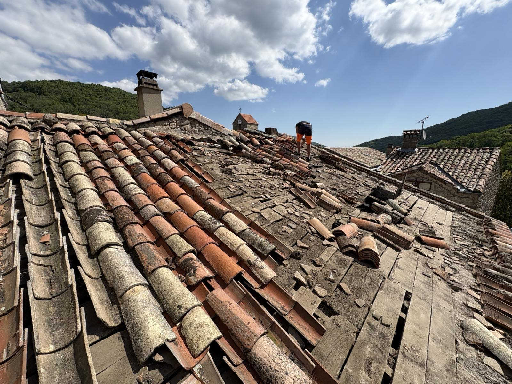

Entretien préventif · Ardèche
Entretien de toiture en Ardèche
Un entretien régulier évite des réparations coûteuses : le climat ardéchois, avec ses alternances de chaleur et d’humidité, appelle un contrôle de la toiture tous les 3 à 5 ans. Nous vérifions la couverture, le faîtage, la zinguerie et les points singuliers.

Ce que nous contrôlons
Tuiles cassées, déplacées ou poreuses, scellements du faîtage, état des noues et des solins, fixation et étanchéité de la zinguerie, présence de mousses : le contrôle passe la toiture en revue point par point. Les petits défauts sont repris immédiatement quand c’est possible ; le reste fait l’objet d’un devis clair.
Après chaque intervention, nous restons disponibles pour répondre à vos questions et assurer le suivi de nos réalisations : beaucoup de nos chantiers nous viennent de clients qui nous ont d’abord confié un simple entretien.
Questions fréquentes
À quelle fréquence faire contrôler sa toiture ?
En Ardèche, tous les 3 à 5 ans, et après chaque épisode climatique violent. Un contrôle régulier prolonge la durée de vie de la couverture : 50 à 80 ans pour une tuile canal, 75 à 100 ans pour une ardoise naturelle bien entretenue.
L’entretien comprend-il le démoussage ?
Le contrôle détecte l’envahissement par les mousses ; si un démoussage s’impose, il fait l’objet d’un devis dédié, souvent couplé à un traitement hydrofuge.